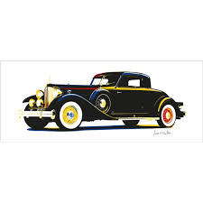
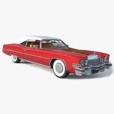

Desde 2010 fazendo a diferença
Desde 2010 fazendo a diferença
Este raro veículo de coleção, dispensa qualquer comentário pela apresentação, estado de conservação, originalidade e riqueza dos detalhes de acabamento, com perfeito funcionamento da mecânica e parte elétrica. A lataria, assim como o estofamento, são dignos de louvor. Possui o certificado de originalidade, assim como placa preta. Pertence a um colecionador com altíssimo grau de exigência e com ampla experiência na área de antigos importados. Equipado originalmente com carburador Carter de corpo duplo, sistema elétrico de 6 volts, rádio AM valvulado original, partida automática no acelerador, calefação com ventilação forçada, amperímetro, manômetro do óleo, relógio, tanque de combustível de 72 litros, transmissão automática Dynaflow (PNDLR), freio hidráulico Bendix nas quatro rodas, 5 pneus americanos Firestone novos 8.20 x 15 com banda branca, suspensão independente nas quatro rodas com molas helicoidais, chave original GM americana, manual do proprietário original, macaco original e diversas peças sobressalentes, além de literatura e brochura de propaganda com todos os modelos de Buick de 1951 original da época. Totalmente restaurado nos mínimos detalhes e rigorosamente dentro dos padrões originais de fábrica da época. Possuo cerca de 80 fotos com detalhes, inclusive do processo de restauração.
MARCA/MODELO
GM/Buick
ANO/MODELO
1951/51
MOTOR
4.3 litros - 8 cilindros em linha (original)
POTÊNCIA
125 cv
COMBUSTÍVEL
gasolina
COR
azul mar
VALOR

O Ford T, considerado o principal calhambeque já produzido, teve mais de 15 milhões de unidades vendidas durante os anos em que foi industrializado, de 1908 a 1927.
Os aficionados brasileiros criaram o neologismo antigo mobilismo para referir-se à prática de colecionar veículos ou dados sobre automóveis antigos .
Roberto Carlos, artista brasileiro, lançou no álbum É Proibido Fumar, a canção O Calhambeque (que alcançou grande sucesso no Brasil) em homenagem ao seu calhambeque, um Ford 1929.
MARCA/MODELO
Ford/A Sport Coupe
ANO/MODELO
1929
MOTOR
4 cil
POTÊNCIA
28600 km
COMBUSTÍVEL
gasolina
COR
preto e amarelo
VALOR
$138.000.00

Considerado um ícone dos Anos Dourados, o Cadillac Eldorado ainda atrai a atenção do setor automotivo. Especialmente se você é um apaixonado por carros antigos e suas características, vai desejar ter um desses exemplares em sua garagem. Afinal, já são quase 70 anos desse modelo considerado de luxo à época. Assim, trata-se de um achado no quesito clássicos.
MARCA/MODELO
Cadillac
ANO/MODELO
1954
MOTOR
V8
POTÊNCIA
1 km
COMBUSTÍVEL
gasolina
COR
vermelho
VALOR
$450.000.00

Buick Super GM
Entre os anos 1940 e 1960, a indústria automotiva norte-americana viveu um período dourado. Modelos que moldaram o gosto americano, com carrocerias enormes e grandes motores V8, para um país que voltava vitorioso da guerra, que constituía famílias numerosas. A terceira geração do Mercury Eight era mais uma “barca” que seguia essa filosofia, com bancos para seis ocupantes, porta-malas imenso e preço acessível. Era mais um carro familiar, até que a marca lançou, em 1949, a versão cupê, também conhecida como Monterey, que se tornou o delírio da juventude dos anos 1950, ao lado de Hudson Hornet, Buick Super Riviera e Chevrolet Bell Air.
MARCA/MODELO
Mercury Coupe